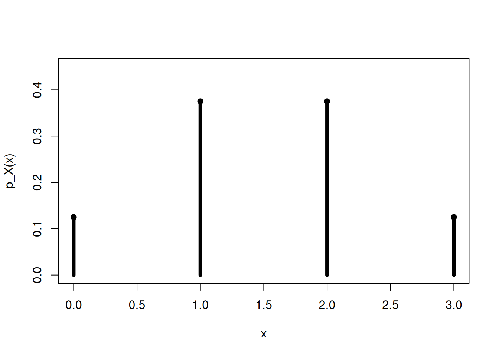
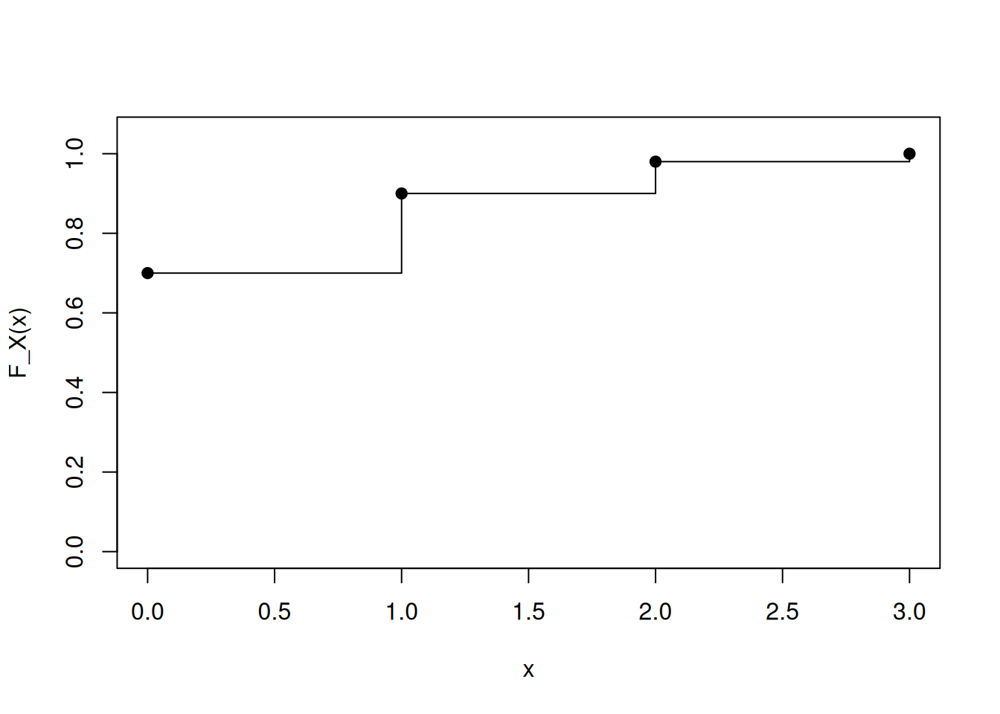

x <- 0:3
p <- c(1, 3, 3, 1) / 8
plot(x, p,
type = "h",
lwd = 5,
ylim = c(0, 0.45),
xlab = "x",
ylab = "p_X(x)")
points(x, p, pch = 19)
Al finalizar este capítulo, el estudiante será capaz de:
En el capítulo anterior introdujimos una variable aleatoria como una función
\[ X:\Omega\to\mathbb R. \]
Ahora nos concentraremos en el caso en que \(X\) sólo puede tomar valores aislados: por ejemplo,
\[ 0,1,2,3, \]
o bien
\[ 0,1,2,\ldots \]
Este tipo de variable aparece de manera natural cuando contamos objetos, fallas, llamadas, defectos, éxitos o eventos.
Una variable aleatoria \(X\) es discreta cuando su conjunto de valores posibles es finito o infinito numerable.
Ejemplos:
El conjunto de valores posibles de \(X\) se denomina soporte y puede escribirse como
\[ \mathcal S_X=\{x:P(X=x)>0\}. \]
Para una variable aleatoria discreta, definimos la función de masa de probabilidad o PMF por
\[ \boxed{p_X(x)=P(X=x)}. \]
Para que una función sea una PMF válida debe satisfacer:
\[ p_X(x)\geq0 \]
para todo \(x\), y
\[ \sum_{x\in\mathcal S_X}p_X(x)=1. \]
Estas dos condiciones expresan exactamente los axiomas fundamentales de la probabilidad aplicados a los valores de una variable discreta.
Sea \(X\) el número de caras obtenidas al lanzar tres veces una moneda equilibrada.
El soporte es
\[ \mathcal S_X=\{0,1,2,3\}. \]
Los ocho resultados elementales son equiprobables. Al agruparlos según el valor de \(X\) obtenemos:
| \(x\) | Resultados con \(X=x\) | \(p_X(x)\) |
|---|---|---|
| 0 | XXX | \(1/8\) |
| 1 | CXX, XCX, XXC | \(3/8\) |
| 2 | CCX, CXC, XCC | \(3/8\) |
| 3 | CCC | \(1/8\) |
Por tanto,
\[ p_X(0)=\frac18, \quad p_X(1)=\frac38, \quad p_X(2)=\frac38, \quad p_X(3)=\frac18. \]
Y comprobamos
\[ \frac18+\frac38+\frac38+\frac18=1. \]
Si queremos la probabilidad de que \(X\) pertenezca a un conjunto \(A\), sumamos las masas correspondientes:
\[ P(X\in A)=\sum_{x\in A}p_X(x). \]
Para la variable anterior,
\[ P(X\geq2)=p_X(2)+p_X(3) =\frac38+\frac18 =\frac12. \]
También
\[ P(1\leq X\leq2)=p_X(1)+p_X(2)=\frac34. \]
Supongamos que una variable discreta tiene soporte
\[ \{1,2,3,4\} \]
y PMF
\[ p_X(x)=cx, \qquad x=1,2,3,4. \]
Para determinar \(c\), utilizamos la condición de normalización:
\[ \sum_{x=1}^{4}cx=1. \]
Entonces
\[ c(1+2+3+4)=1, \]
\[ 10c=1, \]
por lo que
\[ \boxed{c=0.1}. \]
La distribución queda
\[ p_X(1)=0.1, \quad p_X(2)=0.2, \quad p_X(3)=0.3, \quad p_X(4)=0.4. \]
Aunque las probabilidades discretas se calculan sumando masas, a veces resulta más fácil utilizar el complemento.
Por ejemplo,
\[ P(X\geq1)=1-P(X=0). \]
Si \(X\) representa el número de fallas en un periodo, esta forma es muy útil para calcular la probabilidad de al menos una falla.
Una PMF se representa mediante barras o segmentos verticales en los valores posibles de \(X\).
La altura en \(x\) es
\[ p_X(x). \]
A diferencia de una densidad continua, aquí la probabilidad está concentrada directamente en puntos aislados.
x <- 0:3
p <- c(1, 3, 3, 1) / 8
plot(x, p,
type = "h",
lwd = 5,
ylim = c(0, 0.45),
xlab = "x",
ylab = "p_X(x)")
points(x, p, pch = 19)
La función de distribución acumulada es
\[ F_X(x)=P(X\leq x). \]
Si \(X\) es discreta,
\[ \boxed{ F_X(x)=\sum_{t\leq x}p_X(t) } \]
La CDF es, por tanto, la suma acumulada de las masas.
Para el ejemplo de tres monedas:
\[ F_X(x)= \begin{cases} 0, & x<0,\\ 1/8, & 0\leq x<1,\\ 4/8, & 1\leq x<2,\\ 7/8, & 2\leq x<3,\\ 1, & x\geq3. \end{cases} \]
La CDF de una variable discreta tiene forma escalonada. Cada salto en \(x\) tiene tamaño
\[ p_X(x). \]
En una variable discreta,
\[ \boxed{ p_X(x)=F_X(x)-F_X(x^-) } \]
donde \(F_X(x^-)\) representa el valor límite de la CDF inmediatamente antes de \(x\).
En términos intuitivos, la masa puntual es exactamente el tamaño del salto de la CDF.
Un sistema contiene tres sensores. Después de una prueba se registra
\[ X=\text{número de sensores que responden correctamente}. \]
Supongamos la siguiente distribución experimental:
| \(x\) | 0 | 1 | 2 | 3 |
|---|---|---|---|---|
| \(p_X(x)\) | 0.02 | 0.08 | 0.25 | 0.65 |
La probabilidad de que funcionen al menos dos sensores es
\[ P(X\geq2)=0.25+0.65=0.90. \]
La probabilidad de que no funcionen los tres es
\[ P(X<3)=1-0.65=0.35. \]
La distribución completa contiene mucho más información que una sola probabilidad aislada.
Supongamos que \(X\) es el número de retransmisiones requeridas por un paquete, con soporte
\[ \{0,1,2,3\} \]
y PMF
\[ (0.70,0.20,0.08,0.02). \]
Entonces
\[ P(X\leq1)=0.70+0.20=0.90, \]
mientras que
\[ P(X\geq2)=0.08+0.02=0.10. \]
La PMF permite cuantificar directamente el comportamiento operativo del sistema.
x <- 0:3
p <- c(0.70, 0.20, 0.08, 0.02)
sum(p)[1] 1p[p >= 0][1] 0.70 0.20 0.08 0.02P_menor_igual_1 <- sum(p[x <= 1])
P_mayor_igual_2 <- sum(p[x >= 2])
c(P_X_le_1 = P_menor_igual_1,
P_X_ge_2 = P_mayor_igual_2)P_X_le_1 P_X_ge_2
0.9 0.1 F <- cumsum(p)
data.frame(
x = x,
pmf = p,
cdf = F
) x pmf cdf
1 0 0.70 0.70
2 1 0.20 0.90
3 2 0.08 0.98
4 3 0.02 1.00Podemos representar la CDF con una gráfica escalonada:
plot(x, F,
type = "s",
ylim = c(0, 1.05),
xlab = "x",
ylab = "F_X(x)")
points(x, F, pch = 19)
En R podemos generar observaciones de una variable discreta mediante sample():
set.seed(2026)
n <- 20000
muestra <- sample(
x,
size = n,
replace = TRUE,
prob = p
)
tabla <- prop.table(table(muestra))
tablamuestra
0 1 2 3
0.70030 0.19845 0.08065 0.02060 Las frecuencias relativas se aproximan a las probabilidades teóricas cuando el tamaño de la simulación es grande.
teorica <- p
empirica <- as.numeric(tabla[as.character(x)])
comparacion <- data.frame(
x = x,
teorica = teorica,
empirica = empirica
)
comparacion x teorica empirica
1 0 0.70 0.70030
2 1 0.20 0.19845
3 2 0.08 0.08065
4 3 0.02 0.02060Esta comparación ayuda a distinguir entre:
La edición web incluye un recurso que permite modificar las probabilidades asociadas a cuatro valores discretos.
El interactivo:
Esta relación entre PMF y CDF será central en los siguientes capítulos.
Construye cuatro deslizadores positivos \(w_0,w_1,w_2,w_3\) y define
\[ p_i=\frac{w_i}{w_0+w_1+w_2+w_3}. \]
Representa las barras
\[ (0,p_0),(1,p_1),(2,p_2),(3,p_3) \]
y calcula las acumuladas
\[ F_0=p_0, \]
\[ F_1=p_0+p_1, \]
\[ F_2=p_0+p_1+p_2, \]
\[ F_3=1. \]
Mueve los deslizadores y observa simultáneamente cómo cambia la distribución puntual y su acumulación.
Ante una función propuesta \(p(x)\), verifica siempre:
Supongamos
\[ p_X(0)=0.20, \quad p_X(1)=0.55, \quad p_X(2)=0.40. \]
Aunque todos los valores son no negativos,
\[ 0.20+0.55+0.40=1.15, \]
por lo que no puede ser una distribución de probabilidad válida.
Una variable aleatoria discreta toma valores en un conjunto finito o numerable. Su PMF es
\[ p_X(x)=P(X=x), \]
con
\[ p_X(x)\geq0, \qquad \sum_xp_X(x)=1. \]
Las probabilidades de eventos se obtienen sumando masas:
\[ P(X\in A)=\sum_{x\in A}p_X(x). \]
La CDF se obtiene acumulando:
\[ F_X(x)=\sum_{t\leq x}p_X(t). \]
Y la masa puntual coincide con el tamaño del salto de la CDF.
\[ p_X(x)=\frac{c}{2^x}. \]
Determina \(c\) y calcula \(P(X\geq4)\).
El tratamiento de variables aleatorias discretas, funciones de masa y funciones de distribución acumulada sigue la organización estándar de Walpole et al. (2012), Devore (2016), Montgomery y Runger (2018) y Johnson (2018). Los ejemplos, ejercicios, simulaciones y código R son originales; el enfoque computacional general toma como referencia Kerns (2010).